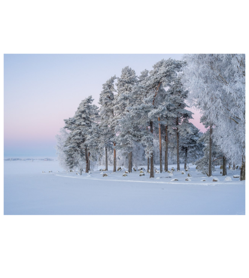

O inverno (AO 1945: Inverno) é a estação mais fria das quatro estações do ano e é comum que durante esta época, em países mais perto dos polos, as temperaturas fiquem abaixo de 0 ºC e que ocorram fenômenos como a queda de neve e a formação de geada. A palavra inverno deriva do latim, hibernum, que significa neutro, invernal, invernoso, tempo frio. O inverno do hemisfério norte é chamado "inverno boreal" e o do hemisfério sul é chamado de "inverno austral". A estação não ocorre nos dois hemisférios ao mesmo tempo: enquanto em um hemisfério o inverno está vigente, o outro está vivenciando o verão.
